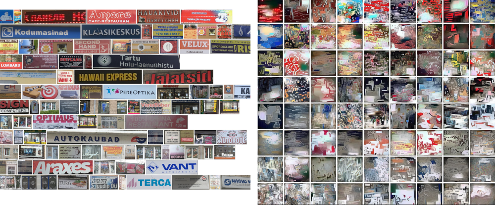
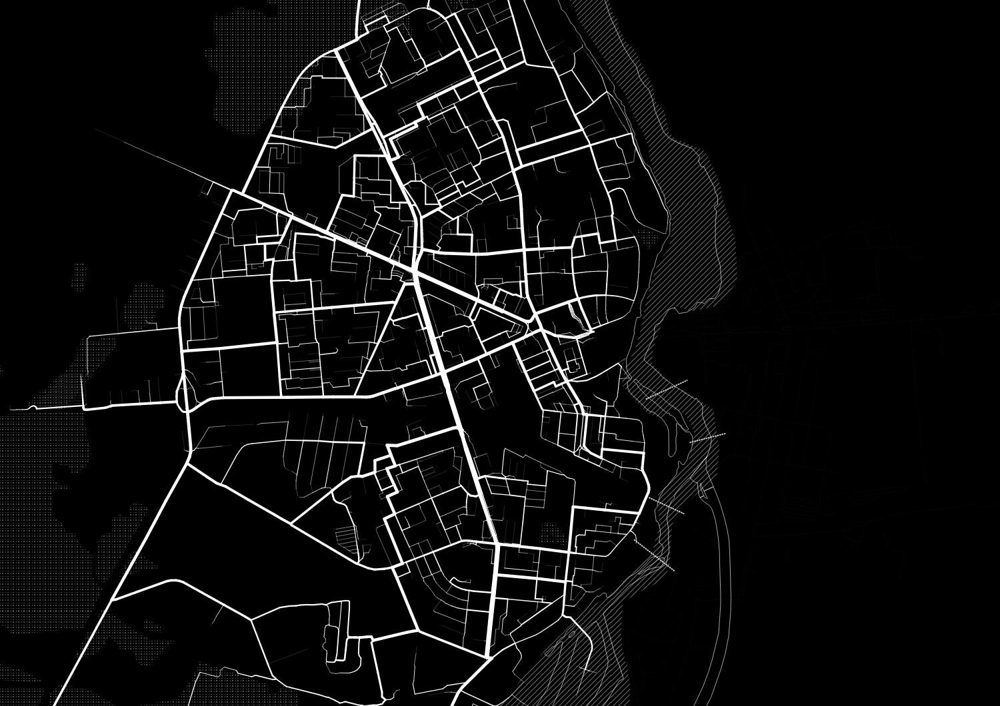
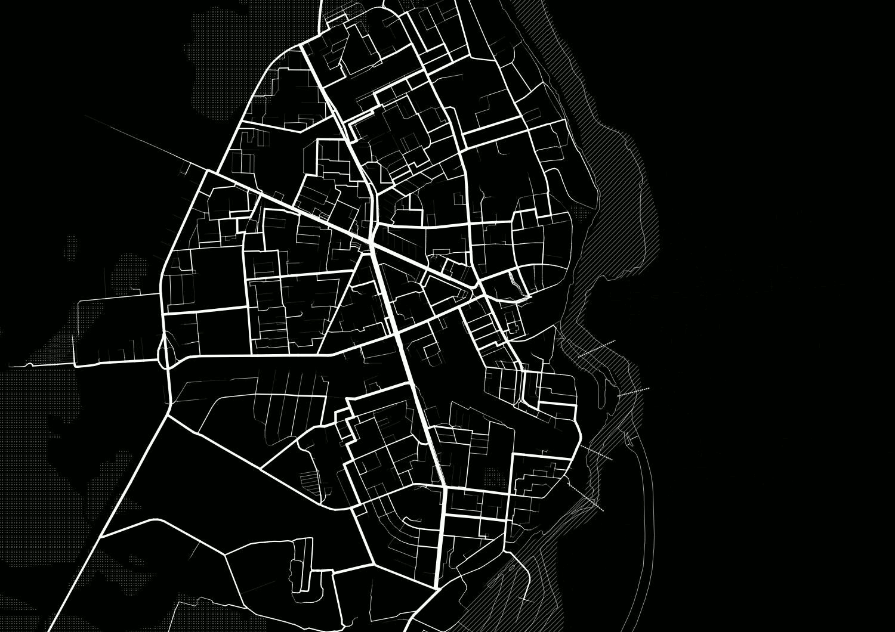

MetaNAR
In May 2019, Damiano and I designed and facilitated MetaNAR as part of the (Re)configuring Territories programme at the Narva Art Residency. The workshop put tools — generative algorithims, and image-analysis and GIS software — in the hands of participants. Using the tools, we worked in groups to map facets of the city's digital footprint, broadly conceived. The tools were developed in collaboration with [Rheza Budiono].